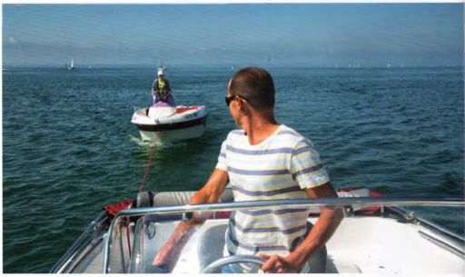
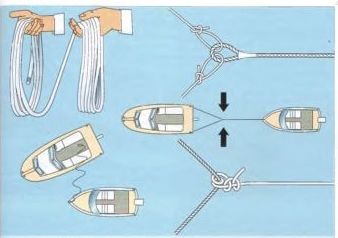
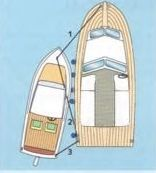
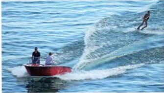
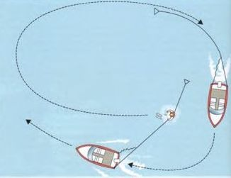
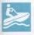

Wer auf den Haken genommen, das heißt geschleppt werden will, schwenkt einen Tampen oder die in Buchten bereitgehaltene Schleppleine. Der Schlepper läuft so dicht wie möglich heran, stoppt die Maschine und nimmt die Leine über. Wenn sie zu kurz geworfen wurde und zwischen den Booten ins Wasser klatscht, den Propeller erst wieder einkuppeln, wenn die Leine eingeholt worden ist. Zu leicht könnte sie sonst in den Propeller geraten und das eigene Schiff manövrierunfähig machen.
In fließendem Gewässer immer gegen den Strom heranfahren, weil man da besser manövrieren kann.
Wenn Heckklampe oder Poller nicht mittschiffs sitzen, die Leine möglichst über eine Hahnepot auf die beiden Heckklampen führen, damit der Anhang nicht fortwährend zu einer Seite zieht. Die Verteilung der Zugkräfte über eine Hahnepot ist auch dann unbedingt ratsam, wenn der Anhang ein schweres Boot oder vom Grund oder Ufer freizuschleppen ist. Langsam anfahren, damit die Leine nur allmählich den vollen Zug aufnimmt und nicht hart einruckt.
Auf kleineren zu schleppenden Booten die Schleppleine am Schleppauge am Bug festmachen. Es ist meistens der Beanspruchung besser gewachsen als die Bugklampe. Da es oft schwierig ist, vom eigenen Boot aus an das Schleppauge heranzukommen, empfiehlt es sich, schon vor der Fahrt eine Leine anzubringen. Sie kann als Festmacher an Land oder auch als Ankerleine verwendet werden. Sind zwei Bugklampen vorhanden, wird die Schleppleine mit einer Hahnepot auf beiden belegt.
► Beim Anschleppen weg von der Schleppleine, denn wenn sie bricht, kann ihr Peitschenschlag lebensgefährlich werden.
In freien Gewässern, in denen der Schiffsverkehr das erlaubt, möglichst so viel Leine stecken, dass sie in der Mitte in einer Bucht durchhängt. Diese Bucht nimmt die Zugkräfte elastisch auf, verhindert ein hartes Einrucken und dadurch eine zeitweilige übermäßige Beanspruchung der Schleppbeschläge.
► Nur so schnell fahren, dass die Rumpfgeschwindigkeit eines kleineren Anhangs nicht überschritten wird.
Eine zu hohe Schleppgeschwindigkeit birgt verschiedene Risiken: Ausreißen der Beschläge, Querschlagen des Bootes oder Unterschneiden. Deshalb ist Vorsicht geboten, wenn ein freundlicher Berufsschiffer bereit ist, ein kleines Motorboot »auf den Haken« zu nehmen. Denn er muss Geld verdienen und kann auf die Rumpfgeschwindigkeit seines Anhangs keine Rücksicht nehmen.
Beim Loswerfen der Schleppleine am Ziel darauf achten, dass sie nicht in den Propeller gerät. Die fremde Leine weit genug achteraus werfen, die eigene Leine nur bei ausgekuppeltem Propeller einholen.

Bei einseitiger Schleppbelastung muss ständig gegengesteuert werden.

Übernehmen der Schleppleine: Die Schleppleine wird in Buchten aufgeschossen, dann teilt man sie, nimmt in jede Hand ungefähr die Hälfte der Buchten und wirft nur einen Teil mit der Wurfhand hinüber. Den anderen Teil gibt die zweite Hand im Flug hinterher. Den Zug der Schleppleine über eine sogenannte Hahnepot auf die beiden Heckklampen verteilen.
Ist der Schlepper eine Motoryacht mit starrer Welle, gibt es Probleme, wenn die Schleppleine auf den Heckklampen belegt wird. Denn der Drehpunkt solcher Boote liegt mehr oder weniger im vorderen Drittel. Ein schwerer Anhang behindert den Heckausschlag unter Umständen so stark, dass ein kontrolliertes Kurshalten und Manövrieren fast unmöglich wird. Deshalb ist es vorteilhafter, mit einer Yacht mit starrer Welle, aber auch in Schleusen und engen Fahrwassern, längsseits zu schleppen.
Das zu schleppende Boot wird auf die Seite genommen, nach der der Propeller dreht. Im Normalfall also auf die rechte. So wird der Radeffekt am besten ausgeglichen. Der Schlepper legt sich so weit nach hinten wie möglich, damit der Propeller rundrum genügend Wasser bekommt.
Die Boote müssen gut gegeneinander abgefendert und die Leinen so steif wie möglich durchgesetzt werden, damit die Boote möglichst wenig Spielraum haben und sich nicht gegeneinander verschieben können. Im Allgemeinen genügen bei Vorausfahrt Vor- und Achterleine und Vorspring. Eine zusätzliche Achterspring empfiehlt sich für Rückwärtsmanöver und bei vielen Stopps. Aber auch bei solchem Gebinde ist die Manövriereigenschaft behindert.

Längsseits schleppen: Ist der Schlepper kleiner als das zu schleppende Boot, macht er so weit wie möglich hinten fest, und der Bug wird leicht einwärts gestellt. Die Stellung reguliert man mit der Vor- (1) und Achterleine (3). Die eigentliche Schleppleine ist die Vorspring (2) des Schleppers, die den Zug in Fahrtrichtung aufnimmt.
Für manchen ist das Motorboot nur Mittel, um den Wasserskisport auszuüben. Doch unterliegt der genau zu beachtenden Einschränkungen.
► Grundsätzlich verboten ist Wasserskilaufen auf Kanälen und in Häfen. Auf Binnenschifffahrtsstraßen ist es nur auf den speziell blau ausgeschilderten Strecken erlaubt, und zwar nur bei einer Sicht von mehr als 1000 m, von Sonnenaufgang bis Sonnenuntergang, sofern nicht auf Zusatzschildern zu den blauen Tafeln bestimmte Zeiten festgesetzt sind.
► Das Zugboot muss mindestens mit zwei Personen besetzt sein, dem Fahrer und jemand, der den Wasserskiläufer ständig im Auge behält.
Bezeichnung einer Wasserskistrecke von 2000 m.
► Während der Vorbeifahrt an anderen Booten oder Schiffen, an Schwimmkörpern und an Badenden muss sich der Wasserskiläufer im Kielwasser des Zugbootes halten. Schleifen und Slalomfahren haben zu unterbleiben. Das Boot muss einen Sicherheitsabstand von mindestens 10 m halten.

Reinfall und erneuter Wasserstart: Nach einer Wasserlandung des Läufers einen Kreisbogen fahren, ähnlich dem Mann-über-Bord-Manöver. Das Zugseil wird nachgeschleppt, bis eine Position in ungefähr 3 m hinter dem Rücken des Läufers erreicht ist. Hart Ruder oder Antrieb einschlagen und etwa im rechten Winkel langsam ablaufen. Das Zugseil, das »die Kurve schneidet«, wird direkt an dem Läufer im Wasser vorbeigezogen, bis er die Hantel greifen kann. Maschine stopp und erneuter Start.
Erstrebenswert ist ein Zugboot mit flachem Kielwasser, also wenig V im hinteren Bodenbereich, aber dennoch sicherer Kurvenstabilität. Sie ist wichtig, damit das Heck durch Schwünge des Läufers nicht aus der Spur gerissen wird.
Für Schlauchboote und sehr leichte Außenborderboote kann man etwa 25 PS (18 kW) als untere Motorisierung ansetzen. Für Monoski etwa 40 PS (29 kW). Ungefähr 35 km/h sind die richtige Geschwindigkeit für sportlichen Wasserskilauf.

Auch für sie gilt, dass sie nur auf den speziell blau ausgeschilderten Strecken gefahren werden dürfen. Ebenfalls nur bei einer Sicht von mehr als 1000 m, in der Zeit von 7.00 bis 20.00 Uhr, jedoch nicht vor Sonnenaufgang und nach Sonnenuntergang. Wassermotorräder dürfen nur auf befestigten Zugängen – Slipanlagen und Rampen – oder mit einem Kran zu Wasser gelassen oder aus dem Wasser herausgenommen werden.
Wanderfahrten auf Binnenschifffahrtsstraßen oder Anfahrten zur nächstgelegenen Fahrstrecke sind erlaubt, wenn mit einem klar erkennbaren Geradeauskurs und angemessener Geschwindigkeit gefahren wird.
Die diversen Vorschriften für Wassermotorradfahrer beziehungsweise Wasserskiläufer enthalten die Wassermotorräder-Verordnung und die Wasserski-Verordnung.

Ausgewiesene Fahrstrecke für Wassermotorräder (Jetski, Waterscooter).